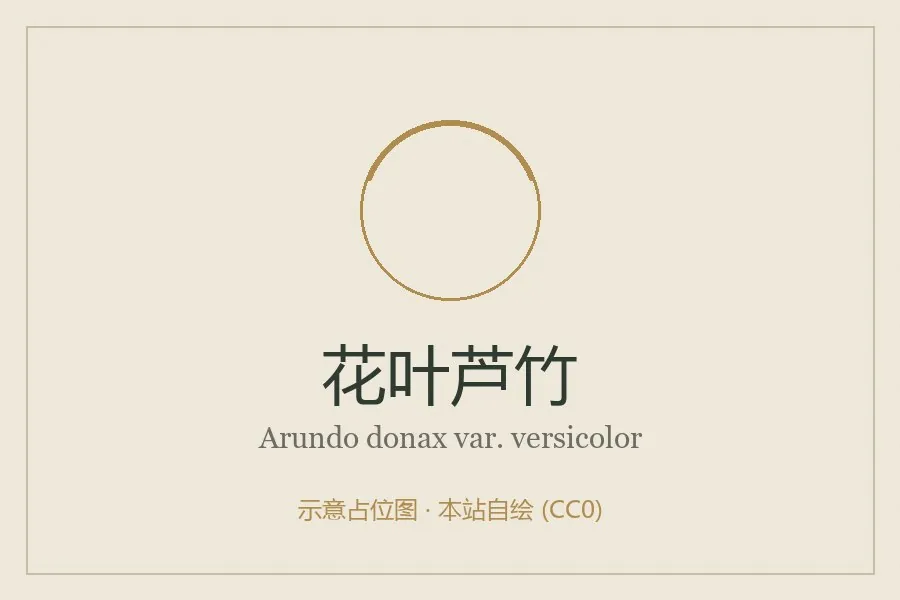

水生植物 · 植物界
花叶芦竹 Arundo donax var. versicolor

禾本科芦竹属多年生挺水草本，叶片有黄白条纹，株高可达数米，原产地中海，是常见的湿地和园林观赏植物。
- 分类
- 门被子植物门纲单子叶植物纲目禾本目科禾本科属芦竹属
- 栖息环境
- 河岸、池塘和沼泽的浅水区，喜温暖湿润
- 地理分布
- 原产地中海地区，中国南北各地水景中引种栽培
- 保护级别
- 暂无评估
物种志
花叶芦竹为禾本科芦竹属的多年生挺水草本，是芦竹的斑叶变种。株高 2–5 米，具粗壮根状茎，茎秆直立、中空。叶片互生，披针形，长 30–60 厘米，绿色，具宽窄不等的黄白色纵条纹。花序为圆锥花序，顶生，长 30–60 厘米，花小、淡褐色，花期秋季；果实为颖果。
花叶芦竹原产地中海地区，中国南北各地引种栽培，喜阳光充足、温暖湿润和浅水环境，适宜水深 10–30 厘米，耐寒、耐湿。它株型高大、叶片有黄白条纹，是湿地公园和庭院水景中常见的观赏植物，也可用于水体净化和护岸。栽培以根状茎分株繁殖为主，春季将根状茎切段栽入塘泥；生长期间保持浅水，冬季剪除枯秆。
形态与习性
- 株高2–5 米
- 叶片披针形，有黄白色纵条纹
- 花期秋季，圆锥花序淡褐色
- 水深适宜水深 10–30 厘米
- 光照喜充足阳光
- 土壤富含腐殖质的湿地土
- 繁殖根状茎分株
- 主要用途水景观赏、护岸、净化
趣味知识
- 花叶芦竹的叶片有黄白色纵条纹，是芦竹的斑叶变种。
- 它株高可达 5 米，常种在池边作背景和屏障。
- 花叶芦竹的根状茎发达，能固土护岸、净化水质。